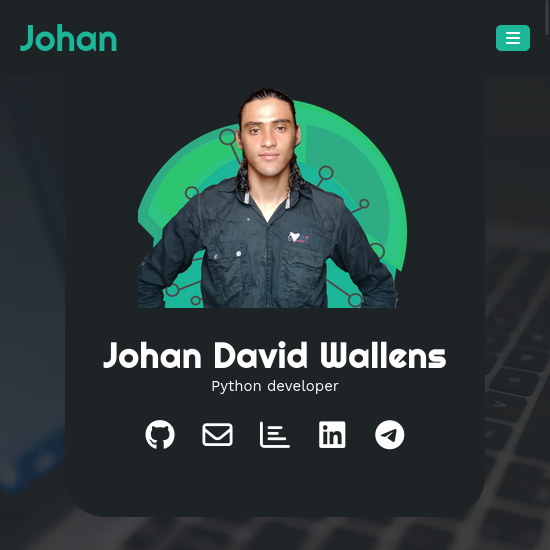

johan-wa
Johan-Wa
This is my web portfolio, is hosted in github pages, and build in HTML5, CSS3 and Javascript.
The first version only, now it is re-build with and own software that takes a template and generate static websites, setting the configurations.
Github pages
Is a free hosting from static websites, from github, in it you can host yours front'ends websites totally free.
Franken
Franken is the name tha i give to my statict sites generator(ssg), is a click aplication tha generate static websites with and .ini file configuration and the diferents templates that we can bult using jinja2 syntax.